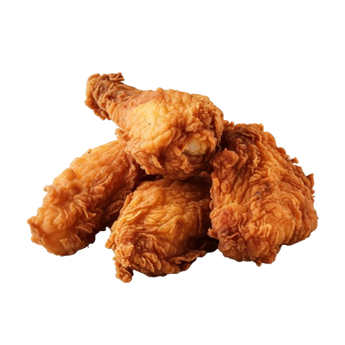

Fried Chicken

Preparation Time:
15 mins
Cook Time:
35 mins
Total Time:
50 mins
Ingredients:
Chicken pieces
Buttermilk
Flour
Seasonings (salt, pepper, paprika, etc.)
Oil for frying
Directions:
Marinate chicken pieces in buttermilk for at least 2 hours.
In a separate bowl, mix flour and seasonings.
Remove chicken from buttermilk and coat with the flour mixture.
Heat oil in a pan and fry chicken until golden brown and crispy.